漫画版
第十三話「閉じた扉のチェーン」
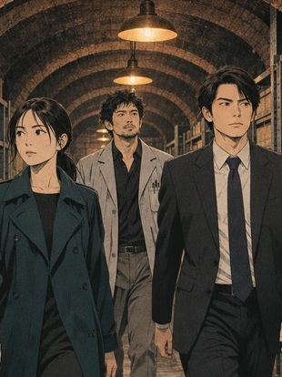
地下資料室
時刻は配布版で変わっていた。写真にも違いがあるか、棚番号を頼りに原本を探そう。
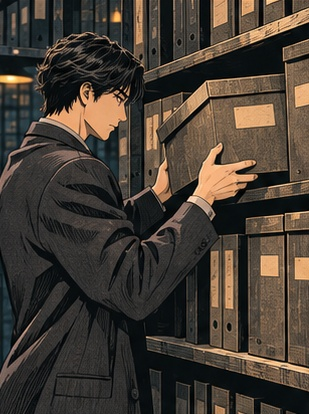
箱の番号も合っています。開けますね。
朝倉は棚から運んだ箱を机に下ろした。
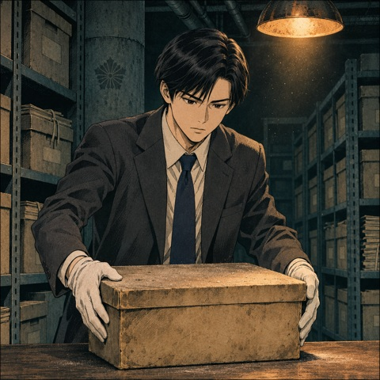
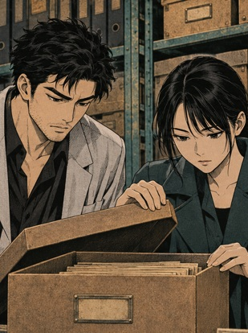
扉の全景と金具の拡大、それに当日の聞き取りね。配布版と並べよう。
1 / 4
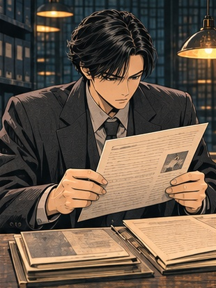
管理人が来たとき、内側からチェーンが掛かっていたそうです。
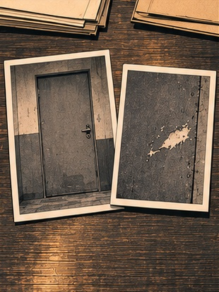
| 扉の全景 | 足元に切れた輪ゴム |
|---|---|
| 金具の拡大 | 金具のすぐ脇に細いこすれ跡 |
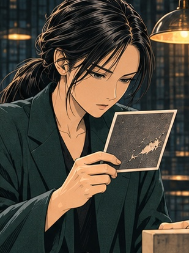
切れた輪ゴムと、この細い跡。何があったか、当日の記録を探そう。
2 / 4
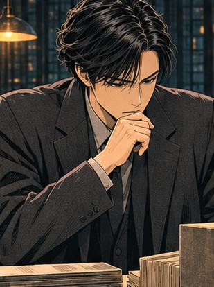
チェーンが内側なら、誰かが中に残っていたんでしょうか。
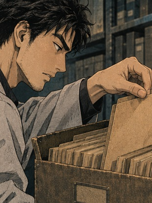
当日の検証だ。室内を無人にして、同じ扉で確かめてる。
現場
切れた輪ゴムと金具脇のこすれ跡
同じ扉での検証
室内に人がいないことを確認 → 廊下から扉を閉める → 室内側のチェーンが掛かった
当日の検証 ／ 無人の室内
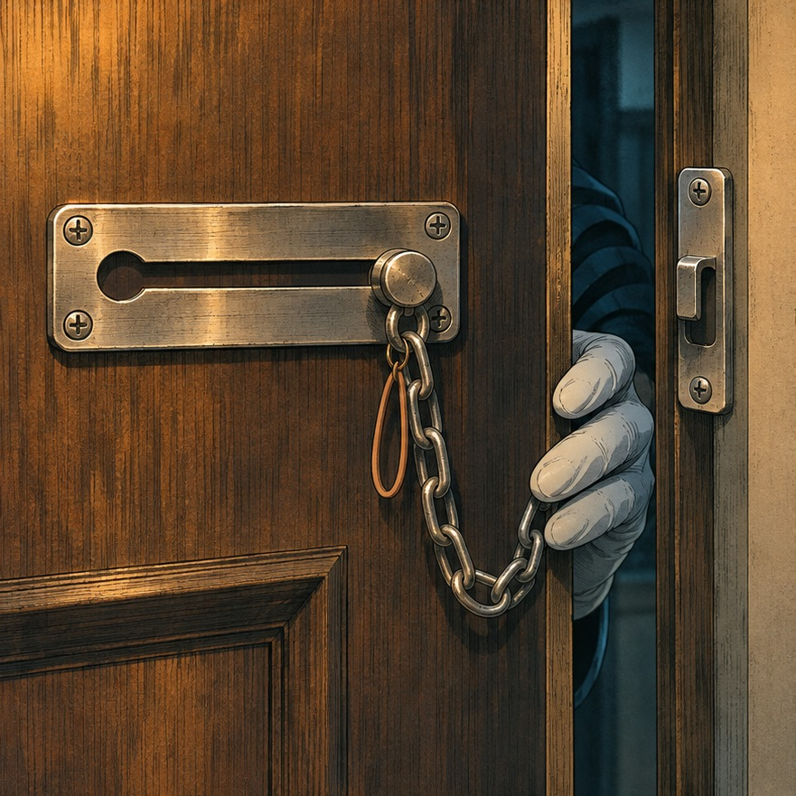
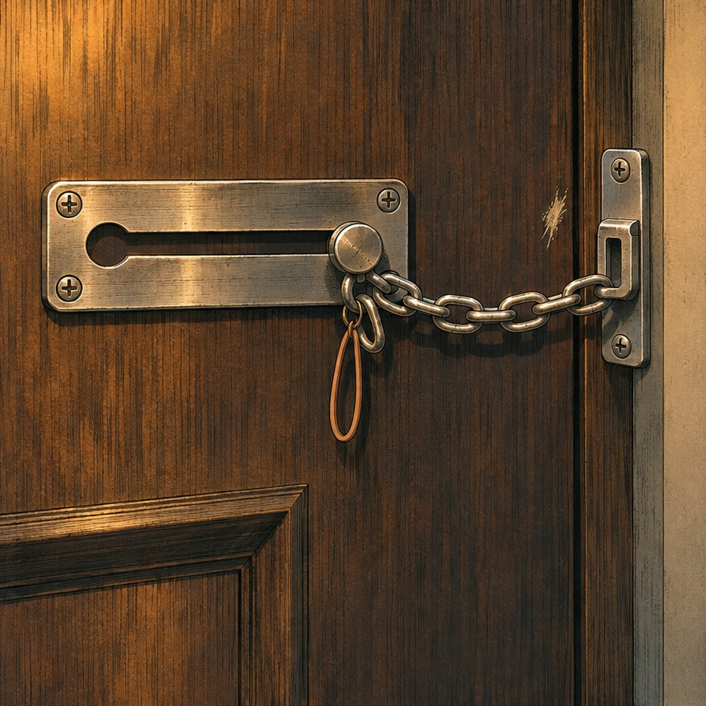
輪ゴムを使った検証では、室内に誰もいない状態でもチェーンが掛かった。受け金具の脇のこすれ跡も、輪ゴムが引っ掛かったと考えれば説明できる。
元資料で読めた金具脇の傷が、配布版では見えない。こすれ跡は、閉じたチェーンだけを見ても分からなかった痕跡。無人で掛かった検証記録と合わせ、室内に人がいたという推定を外す。
配布版を元の記録に寄せ、どこで範囲が途切れるか確かめた。
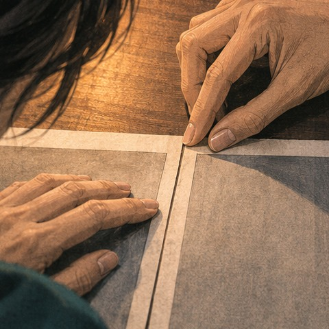
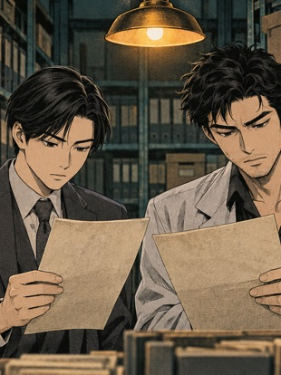
検証でもチェーンは掛かった。朝倉、報告の「中に人がいた」は外せる。
3 / 4
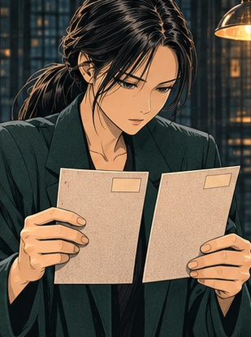
拡大の裏にも、全景と同じ現場番号が振ってある。
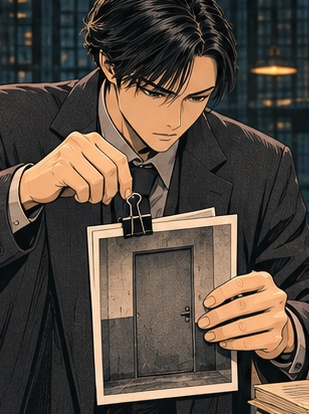
同じ現場番号ですね。傷の位置を追えるよう、全景と拡大を一緒に戻します。
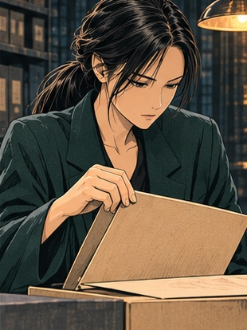
傷が写る拡大も、全景と一緒に残して。切り離したら、また理由が分からなくなる。
4 / 4